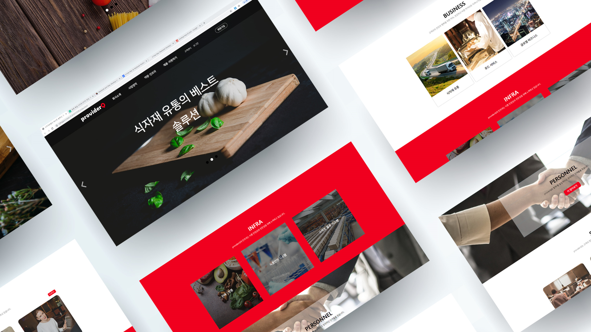
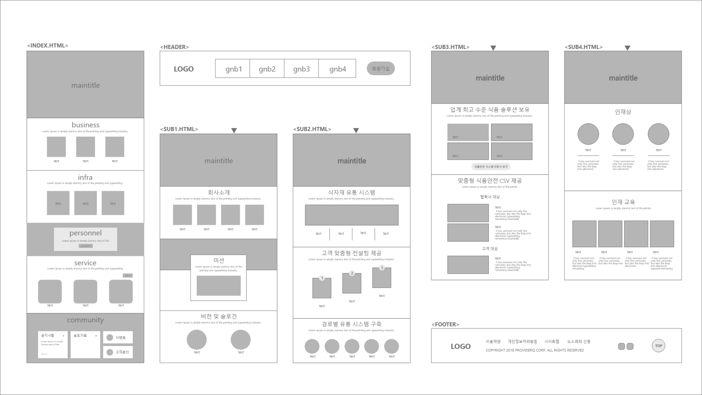
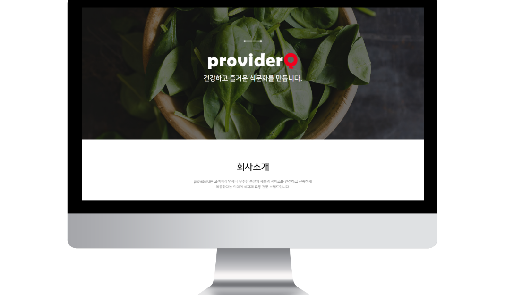
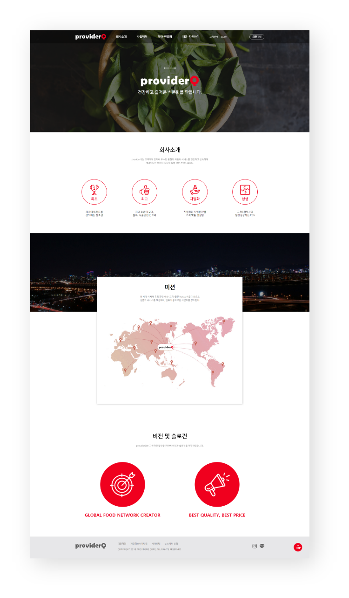
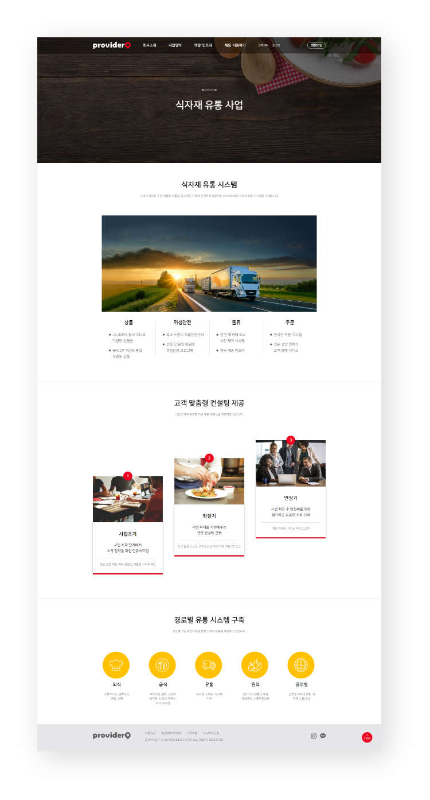
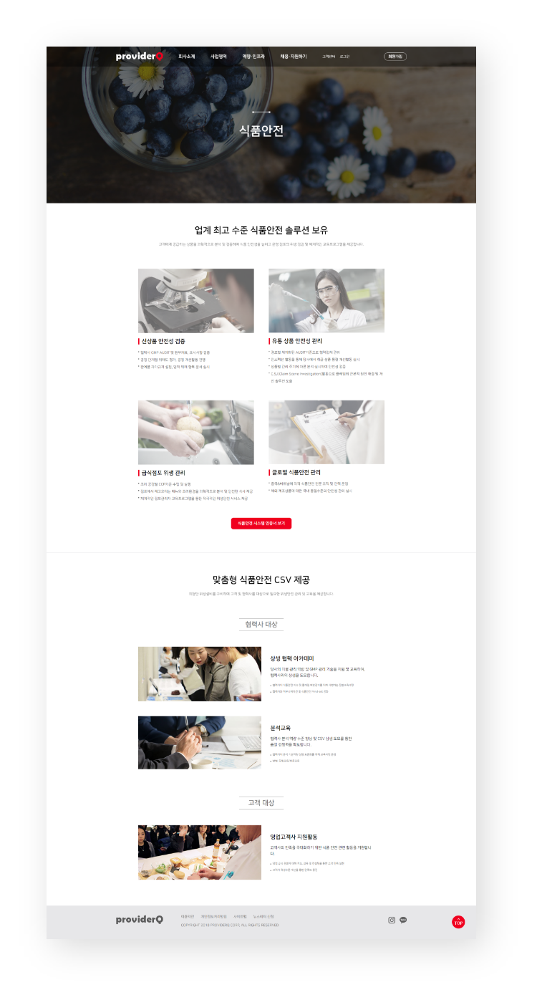
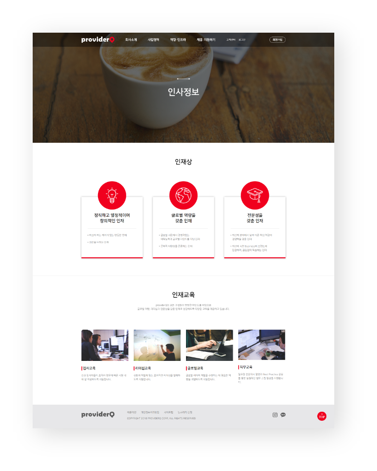
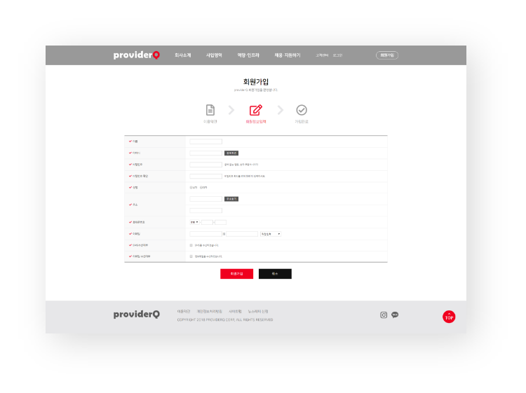
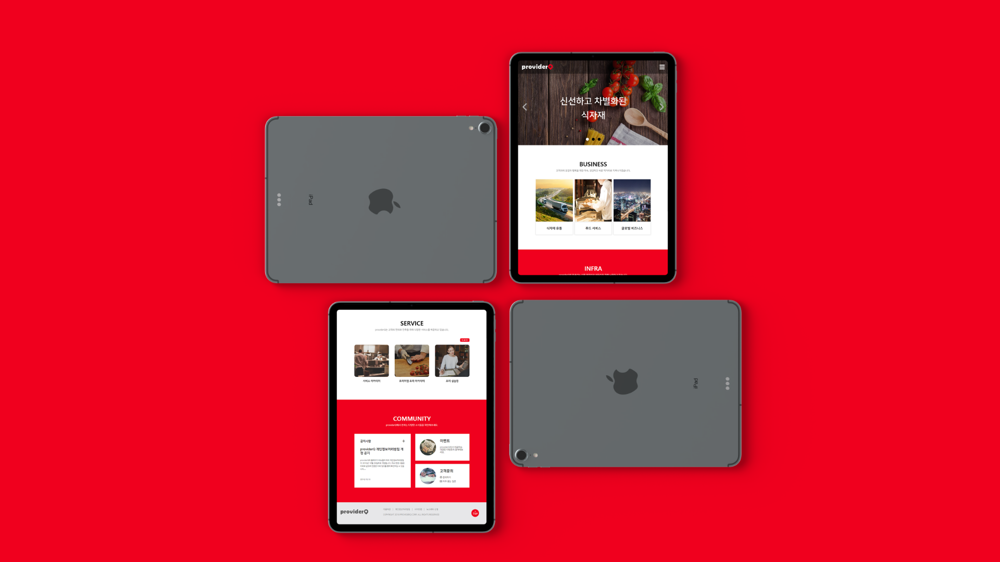
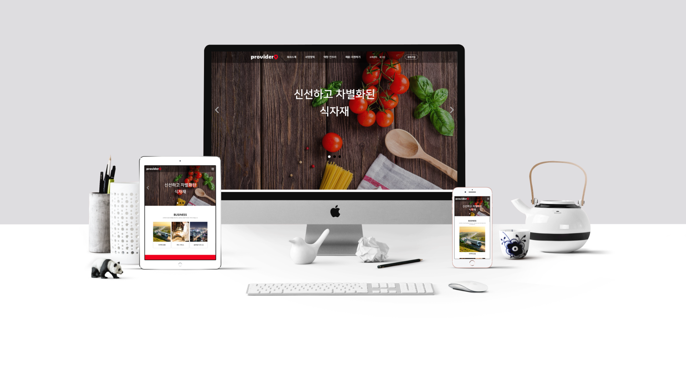

OVERVIEW
프로바이더큐는 고객들에게 우수한 품질의 상품과 서비스를
안전하고 신속하게 제공하는 식자재 유통 전문 브랜드입니다. 보다 깔끔하고 심플한 화면구성을 통해 고급스럽고 전문적인 이미지와 더 나아가 건강하고 맛있는 식문화를 창출하는
브랜드의 이미지를 나타내고자 노력하였습니다.
프로바이더큐는 고객들에게 우수한 품질의 상품과 서비스를
안전하고 신속하게 제공하는 식자재 유통 전문 브랜드입니다. 보다 깔끔하고 심플한 화면구성을 통해 고급스럽고 전문적인 이미지와 더 나아가 건강하고 맛있는 식문화를 창출하는
브랜드의 이미지를 나타내고자 노력하였습니다.

마인드맵을 통해 컨셉 키워드 도출
식욕을 돋구는 빨간색과 흰색, 검정색 등 무채색을 함께 사용하여
심플하면서 포인트가 될 수 있도록 하고,
신선한 채소 이미지를
메인에 넣어
고품질의 식자재를 제공하는 브랜드이미지를
강조하고자 하였습니다.
#F0001E
#FFFFFF
#000000
나눔스퀘어
나눔스퀘어
Hind
Hind

사용자가 index에서 원하는 정보를 한 번에 찾을 수 있도록
일자형 구조로 디자인하고
상단에 Header를 고정시켜 어느 페이지에서든
원하는 페이지로 이동할 수 있도록 하여 접근성을 높였습니다.
index페이지이기 때문에 브랜드의 업종이 ‘식자재유통업’임을
한 번에 알아볼 수 있도록 메인이미지에 식료품 사진을 넣고
브랜드 소개 내용을 주로 넣었습니다.

레이아웃을 더욱 단순화시켜 이미지를 부각시키고 텍스트의 양은 줄이면서
보다 작은 모바일 화면에서도 보기 편하도록 디자인하였습니다.


사진과 플랫 아이콘을 많이 사용하여 명료하면서 간결하게
내용을 함축시켜 보기 편하도록 디자인하였습니다.


회사소개 페이지

식자재 유통사업 페이지

식품 안전 페이지

인사정보 페이지

회원가입 페이지

사용자가 원하는 정보를 찾기 쉽도록 텍스트보다
이미지 위주의 심플한 디자인 구성을 하였습니다.

PC ver.에서 Header에서 GNB를 제거하고 햄버거버튼을 통해 사이드 메뉴가 열리도록 하고 글씨와 이미지의
크기를 조절하여 좀더 보기 쉽게 디자인하였습니다.
